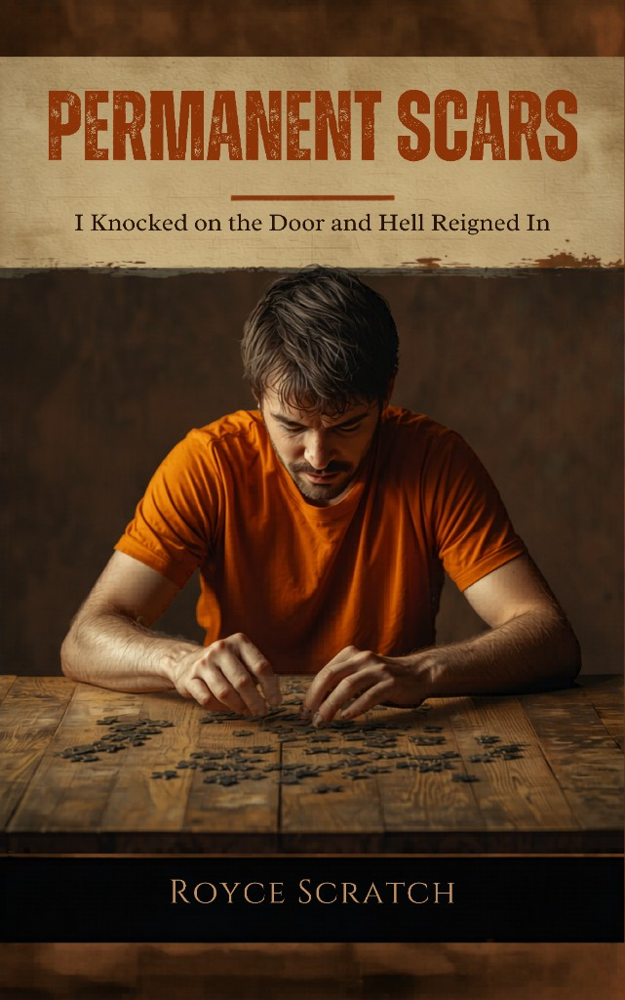

A story from inside the diagnosis
The author writes from lived experience: 23 years of treatment, six psychiatric admissions, and a story drawn closely from real life.

The author writes from lived experience: 23 years of treatment, six psychiatric admissions, and a story drawn closely from real life.